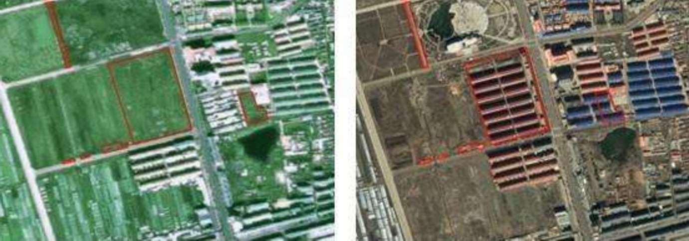
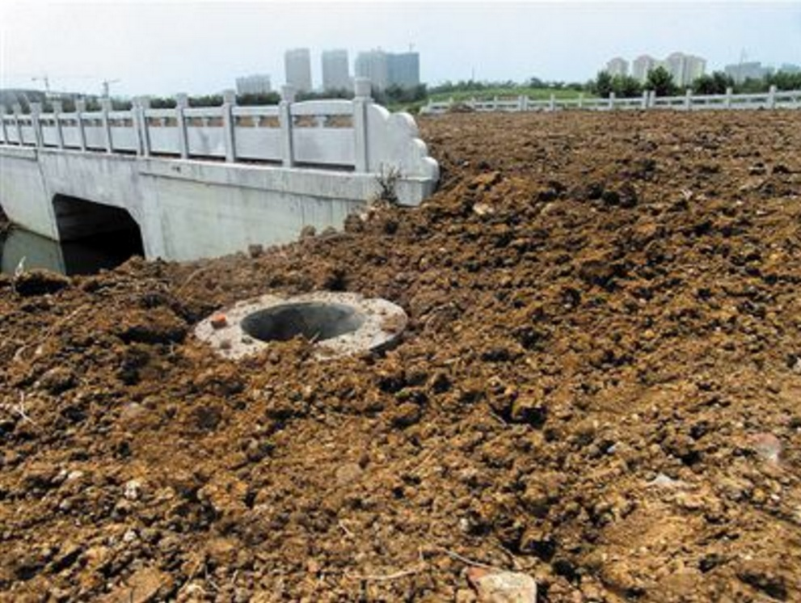

房地产高潮那几年，官员为了尽快卖地，经常超出建设用地指标搞工程。在凑够指标前，为了应付国土资源部的卫星侦察，地方政府探听卫星拍摄时间，在马路上做临时绿化，给违规建筑罩军用伪装网，应付检查很有效果。冷战期间美苏双方都会趁对方卫星空挡调动战略导弹，用大型伪装设备盖住自己的核武器，现在中国也达到超级大国水平了……
在国家严厉的技术和政策手段下，各地仍频出奇招，试图躲过检查。
1 刷绿漆
据媒体报道，2013年，江苏南通市港闸经济开发区为逃避国土资源部卫星遥测检查，以伪装手段对非法建设的场地进行盖土播种、刷绿漆、使用军事伪装网等，将建筑工地伪装成耕地。
2 水泥地撒土
据媒体报道，2012年，山东枣庄市中区西王庄乡周边的一些非法占用耕地的水泥厂、化工厂等企业，为了应付卫星遥感，将黄土撒在水泥地面上。无独有偶，今年春节期间，新华社记者返回鲁北农村老家时，发现许多水泥路面盖上了十公分土，主要是为了逃过国土监测卫星的“法眼”，显示耕地面积并未减少。
3 铺薄膜种菜
2011年，湖北襄阳市双沟工业园新修的水泥路上，被填上土，铺上薄膜，撒下种子种菜。针对此举是躲避国土卫星监测的质疑，当地政府解释称，此举除了为搞“短期农作物种植”，还有一个目的是为了“公路保养”。
4 铺稻草、玉米秆
2010年，据报道，江苏邳州为迎接国土部抽查，以每天50元雇村民到千岛湖工地铺稻草和玉米秆，用黑网遮盖在建工地，欺骗国土部遥感卫星。检查过后，再继续开工。
5 种无根树
据央视2011年报道，福建福鼎市为了应付国土部门检查，在非法征用的土地上插上没有树根的果树苗。因正值春天，这些干枯的树苗与周围的绿植形成鲜明对比。

多位泗洪市民向记者介绍，从去年开始，泗洪县修建了许多柏油路，但在今年6月初，有将近20余条新修柏油马路，包括古徐大道、少昊路和20公里长的121省道新道，突然被黄土覆盖，并种上了豆子，“马路就跟消失了一样”。
泗洪市民王建兵拍摄了当时泥土覆盖马路的照片。王建兵说，今年6月初，他路过青阳镇高庄时，发现高庄南侧一条新修的柏油路，一夜之间全部盖上了黄土，并种上了黄豆。其当时拍摄的照片显示，一座大桥路面被泥土覆盖，大桥栏杆和地下管道井十分扎眼。而另一条柏油路被盖上泥土后，还立上了一个红色标识牌，牌子上写着“地已种上黄豆”。
泗洪县当地卡车司机李文国(化名)曾参与了拉土盖路的行动。李文国说，6月初的一天，他接到公司电话，要求拉土把古徐大道一段盖住。“盖路都是凌晨干的，泗洪县和青阳镇领导指挥，卡车从县里一些基建工程拉土，倒在新修的柏油路上，推土机再推平，土的深度半米到一米深。”


地方政府的神操作，骗过天上的卫星，算是字面意思上的“逆天”吧。
相关回答：